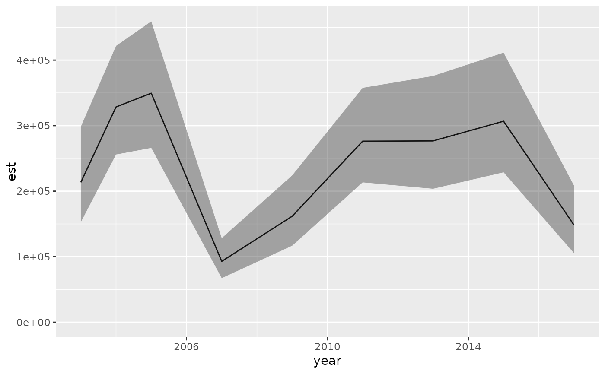
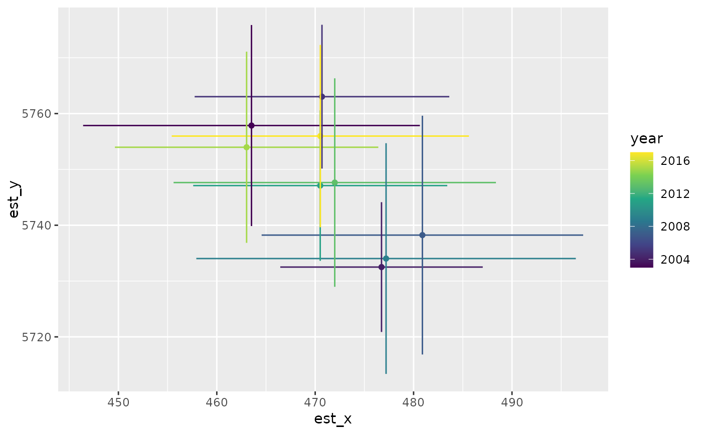
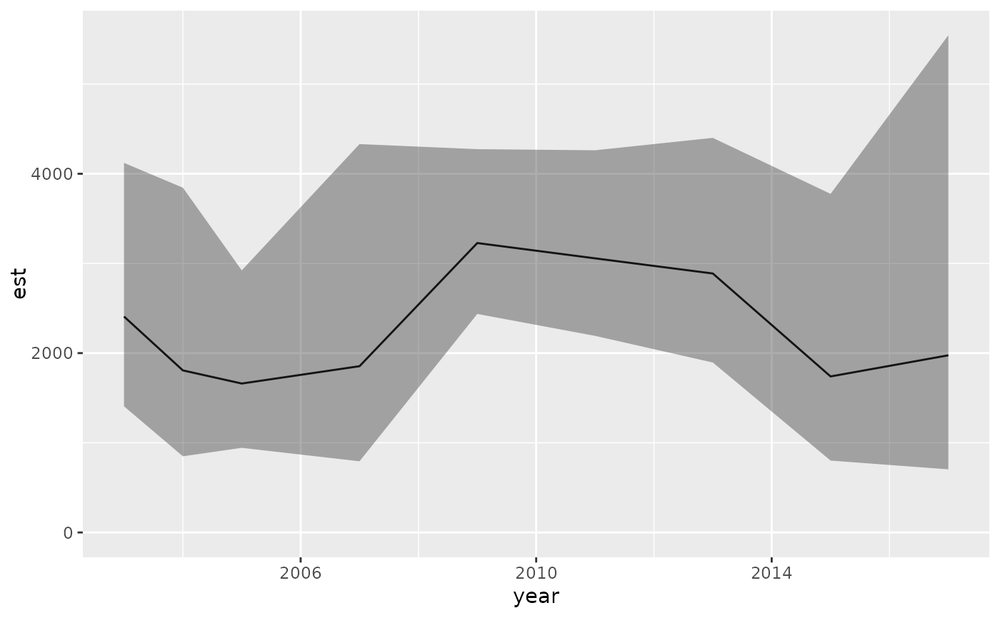

Extract a relative biomass/abundance index, center of gravity, or effective area occupied
Source:R/index.R
get_index.RdExtract a relative biomass/abundance index, center of gravity, or effective area occupied
Usage
get_index(
obj,
bias_correct = FALSE,
level = 0.95,
area = 1,
silent = TRUE,
...
)
get_cog(
obj,
bias_correct = FALSE,
level = 0.95,
format = c("long", "wide"),
area = 1,
silent = TRUE,
...
)
get_eao(obj, bias_correct = FALSE, level = 0.95, area = 1, silent = TRUE, ...)Arguments
- obj
Output from
predict.sdmTMB()withreturn_tmb_object = TRUE.- bias_correct
Should bias correction be implemented
TMB::sdreport()?- level
The confidence level.
- area
Grid cell area. A vector of length
newdatafrompredict.sdmTMB()or a value of length 1, which will be repeated internally to match.- silent
Silent?
- ...
Passed to
TMB::sdreport().- format
Long or wide.
Value
For get_index():
A data frame with a columns for time, estimate, lower and upper
confidence intervals, log estimate, and standard error of the log estimate.
For get_cog():
A data frame with a columns for time, estimate (center of gravity in x and y
coordinates), lower and upper confidence intervals, and standard error of
center of gravity coordinates.
For get_eao():
A data frame with a columns for time, estimate (effective area occupied; EAO),
lower and upper confidence intervals,
log EAO, and standard error of the log EAO estimates.
References
Geostatistical model-based indices of abundance (along with many newer papers):
Shelton, A.O., Thorson, J.T., Ward, E.J., and Feist, B.E. 2014. Spatial semiparametric models improve estimates of species abundance and distribution. Canadian Journal of Fisheries and Aquatic Sciences 71(11): 1655--1666. doi:10.1139/cjfas-2013-0508
Thorson, J.T., Shelton, A.O., Ward, E.J., and Skaug, H.J. 2015. Geostatistical delta-generalized linear mixed models improve precision for estimated abundance indices for West Coast groundfishes. ICES J. Mar. Sci. 72(5): 1297–1310. doi:10.1093/icesjms/fsu243
Geostatistical model-based centre of gravity:
Thorson, J.T., Pinsky, M.L., and Ward, E.J. 2016. Model-based inference for estimating shifts in species distribution, area occupied and centre of gravity. Methods Ecol Evol 7(8): 990–1002. doi:10.1111/2041-210X.12567
Geostatistical model-based effective area occupied:
Thorson, J.T., Rindorf, A., Gao, J., Hanselman, D.H., and Winker, H. 2016. Density-dependent changes in effective area occupied for sea-bottom-associated marine fishes. Proceedings of the Royal Society B: Biological Sciences 283(1840): 20161853. doi:10.1098/rspb.2016.1853
Bias correction:
Thorson, J.T., and Kristensen, K. 2016. Implementing a generic method for bias correction in statistical models using random effects, with spatial and population dynamics examples. Fisheries Research 175: 66–74. doi:10.1016/j.fishres.2015.11.016
Examples
# \donttest{
library(ggplot2)
# use a small number of knots for this example to make it fast:
pcod_spde <- make_mesh(pcod, c("X", "Y"), n_knots = 60, type = "kmeans")
# fit a spatiotemporal model:
m <- sdmTMB(
data = pcod,
formula = density ~ 0 + as.factor(year),
time = "year", mesh = pcod_spde, family = tweedie(link = "log")
)
# prepare a prediction grid:
nd <- replicate_df(qcs_grid, "year", unique(pcod$year))
# Note `return_tmb_object = TRUE` and the prediction grid:
predictions <- predict(m, newdata = nd, return_tmb_object = TRUE)
# biomass index:
ind <- get_index(predictions)
#> Bias correction is turned off.
#> It is recommended to turn this on for final inference.
ind
#> year est lwr upr log_est se type
#> 1 2003 213396.64 152643.77 298329.4 12.27091 0.1709448 index
#> 2 2004 328514.13 255929.66 421684.4 12.70234 0.1273887 index
#> 3 2005 349502.73 266053.44 459126.4 12.76427 0.1391935 index
#> 4 2007 92900.11 67251.16 128331.3 11.43928 0.1648452 index
#> 5 2009 161751.50 116785.32 224031.1 11.99382 0.1661887 index
#> 6 2011 276264.20 213411.78 357627.4 12.52911 0.1317035 index
#> 7 2013 276664.42 203691.14 375780.7 12.53056 0.1562276 index
#> 8 2015 306744.07 228767.84 411298.8 12.63377 0.1496487 index
#> 9 2017 148187.40 105354.60 208434.2 11.90623 0.1740572 index
ggplot(ind, aes(year, est)) + geom_line() +
geom_ribbon(aes(ymin = lwr, ymax = upr), alpha = 0.4) +
ylim(0, NA)

# center of gravity:
cog <- get_cog(predictions, format = "wide")
cog
#> year est_x lwr_x upr_x se_x est_y lwr_y upr_y se_y
#> 1 2003 463.5260 446.4142 480.6378 8.730670 5757.861 5739.855 5775.867 9.187109
#> 2 2004 476.7402 466.4506 487.0297 5.249871 5732.504 5720.879 5744.129 5.931164
#> 3 2005 470.6887 457.7494 483.6280 6.601796 5763.031 5750.153 5775.910 6.570990
#> 4 2007 480.8948 464.5560 497.2336 8.336280 5738.231 5716.843 5759.620 10.912733
#> 5 2009 477.2029 457.9185 496.4872 9.839144 5734.029 5713.361 5754.697 10.545101
#> 6 2011 470.5112 457.6004 483.4221 6.587284 5747.104 5733.628 5760.579 6.875389
#> 7 2013 471.9877 455.6078 488.3676 8.357252 5747.645 5728.969 5766.320 9.528488
#> 8 2015 463.0289 449.6443 476.4136 6.829028 5753.970 5736.844 5771.096 8.737855
#> 9 2017 470.5219 455.4189 485.6249 7.705734 5755.973 5739.644 5772.301 8.331045
#> type
#> 1 cog
#> 2 cog
#> 3 cog
#> 4 cog
#> 5 cog
#> 6 cog
#> 7 cog
#> 8 cog
#> 9 cog
ggplot(cog, aes(est_x, est_y, colour = year)) +
geom_point() +
geom_linerange(aes(xmin = lwr_x, xmax = upr_x)) +
geom_linerange(aes(ymin = lwr_y, ymax = upr_y)) +
scale_colour_viridis_c()

# effective area occupied:
eao <- get_eao(predictions)
eao
#> year est lwr upr log_est se type
#> 1 2003 2408.074 1407.0230 4121.340 7.786583 0.2741638 eoa
#> 2 2004 1807.151 849.4148 3844.759 7.499507 0.3851904 eoa
#> 3 2005 1660.807 943.6930 2922.859 7.415059 0.2884024 eoa
#> 4 2007 1854.122 793.7681 4330.947 7.525166 0.4328524 eoa
#> 5 2009 3227.459 2437.0094 4274.293 8.079450 0.1433310 eoa
#> 6 2011 3056.811 2192.3985 4262.042 8.025128 0.1695827 eoa
#> 7 2013 2887.839 1895.2602 4400.246 7.968264 0.2148775 eoa
#> 8 2015 1739.803 801.6399 3775.904 7.461527 0.3953480 eoa
#> 9 2017 1975.478 703.8844 5544.253 7.588566 0.5265156 eoa
ggplot(eao, aes(year, est)) + geom_line() +
geom_ribbon(aes(ymin = lwr, ymax = upr), alpha = 0.4) +
ylim(0, NA)

# }